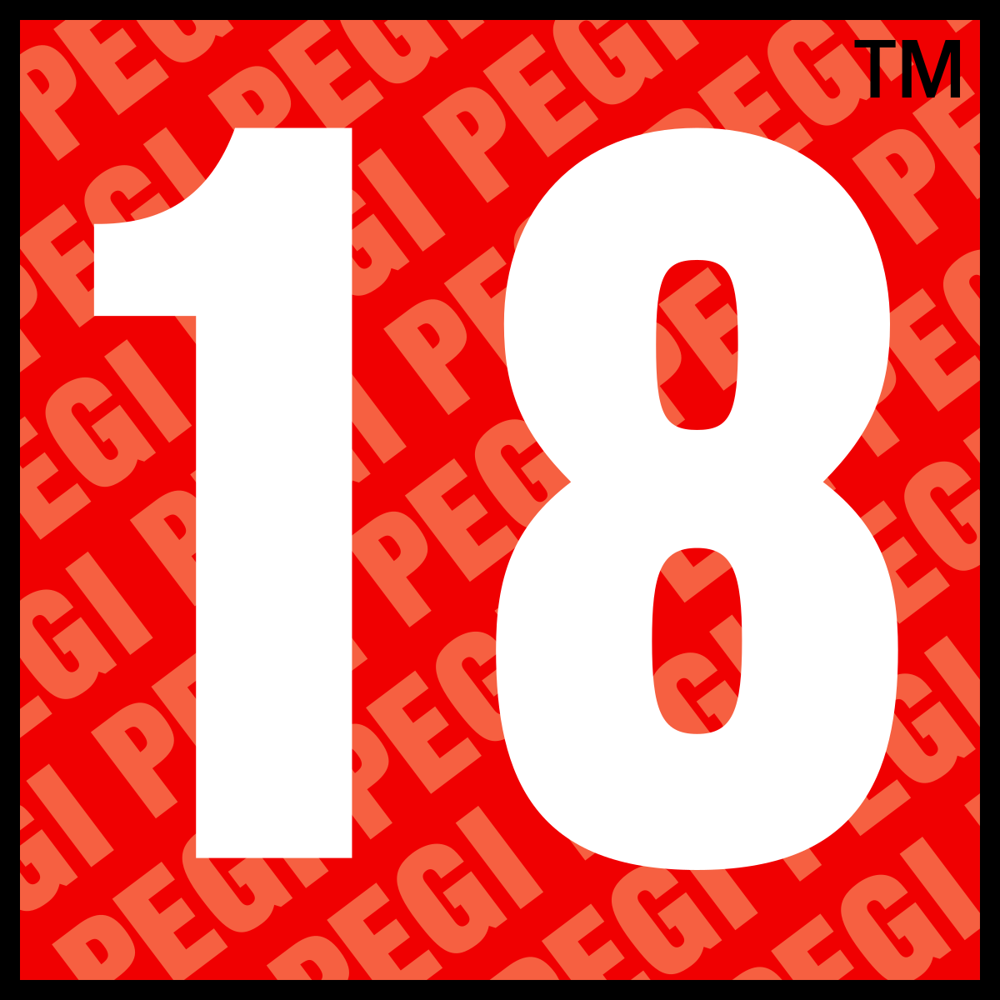

S.T.A.L.K.E.R. 2: Heart of Chornobyl
7



S.T.A.L.K.E.R. 2: Heart of Chornobyl es la secuela del celebrado videojuego de acción FPS postapocalíptico a cargo de GSC Game World para PC, Xbox Series y PlayStation 5. La zona de exclusión de Chernóbil es un entorno único y peligroso en constante cambio. Esta tierra alberga riquezas: podrás hacerte con artefactos de valor incalculable siempre y cuando te atrevas a reclamarlos. Podrás explorar uno de los mundos abiertos más grandes hasta la fecha, asolado por la radiación y repleto de mutantes y anomalías. Las decisiones que tomes no solo definirán tu propia historia, sino que también influirán en el futuro.